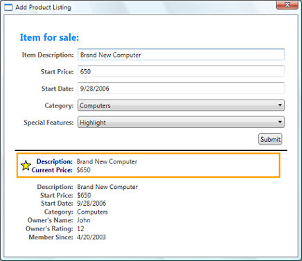
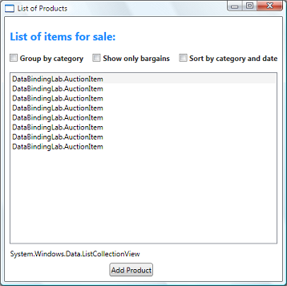

Data Binding Overview


Windows Presentation Foundation (WPF) data binding provides a simple and consistent way for applications to present and interact with data. Elements can be bound to data from a variety of data sources in the form of common language runtime (CLR) objects and XML. ContentControls such as Button and ItemsControls such as ListBox and ListView have built-in functionality to enable flexible styling of single data items or collections of data items. Sort, filter, and group views can be generated on top of the data.
The data binding functionality in WPF has several advantages over traditional models, including a broad range of properties that inherently support data binding, flexible UI representation of data, and clean separation of business logic from UI.
This topic first discusses concepts fundamental to WPF data binding and then goes into the usage of the Binding class and other features of data binding.
What Is Data Binding?
Data binding is the process that establishes a connection between the application UI and business logic. If the binding has the correct settings and the data provides the proper notifications, then, when the data changes its value, the elements that are bound to the data reflect changes automatically. Data binding can also mean that if an outer representation of the data in an element changes, then the underlying data can be automatically updated to reflect the change. For example, if the user edits the value in a TextBox element, the underlying data value is automatically updated to reflect that change.
A typical use of data binding is to place server or local configuration data into forms or other UI controls. In WPF, this concept is expanded to include the binding of a broad range of properties to a variety of data sources. In WPF, dependency properties of elements can be bound to CLR objects (including ADO.NET objects or objects associated with Web Services and Web properties) and XML data.
For an example of data binding, take a look at the following application UI from the Data Binding Demo:

The above is the UI of an application that displays a list of auction items. The application demonstrates the following features of data binding:
The content of the ListBox is bound to a collection of AuctionItem objects. An AuctionItem object has properties such as Description, StartPrice, StartDate, Category, SpecialFeatures, etc.
The data (AuctionItem objects) displayed in the ListBox is templated so that the description and the current price are shown for each item. This is done using a DataTemplate. In addition, the appearance of each item depends on the SpecialFeatures value of the AuctionItem being displayed. If the SpecialFeatures value of the AuctionItem is Color, the item has a blue border. If the value is Highlight, the item has an orange border and a star. The Data Templating section provides information about data templating.
The user can group, filter, or sort the data using the CheckBoxes provided. In the image above, the "Group by category" and "Sort by category and date" CheckBoxes are selected. You may have noticed that the data is grouped based on the category of the product, and the category name is in alphabetical order. It is difficult to notice from the image but the items are also sorted by the start date within each category. This is done using a collection view. The Binding to Collections section discusses collection views.
When the user selects an item, the ContentControl displays the details of the selected item. This is called the Master-Detail scenario. The Master-Detail Scenario section provides information about this type of binding scenario.
The type of the StartDate property is DateTime, which returns a date that includes the time to the millisecond. In this application, a custom converter has been used so that a shorter date string is displayed. The Data Conversion section provides information about converters.
When the user clicks the Add Product button, the following form comes up:

The user can edit the fields in the form, preview the product listing using the short preview and the more detailed preview panes, and then click submit to add the new product listing. Any existing grouping, filtering and sorting functionalities will apply to the new entry. In this particular case, the item entered in the above image will be displayed as the second item within the Computer category.
Not shown in this image is the validation logic provided in the Start Date TextBox. If the user enters an invalid date (invalid formatting or a past date), the user will be notified with a ToolTip and a red exclamation point next to the TextBox. The Data Validation section discusses how to create validation logic.
Before going into the different features of data binding outlined above, we will first discuss in the next section the fundamental concepts that are critical to understanding WPF data binding.
Basic Data Binding Concepts
Regardless of what element you are binding and the nature of your data source, each binding always follows the model illustrated by the following figure:

As illustrated by the above figure, data binding is essentially the bridge between your binding target and your binding source. The figure demonstrates the following fundamental WPF data binding concepts:
Typically, each binding has these four components: a binding target object, a target property, a binding source, and a path to the value in the binding source to use. For example, if you want to bind the content of a TextBox to the Name property of an Employee object, your target object is the TextBox, the target property is the Text property, the value to use is Name, and the source object is the Employee object.
The target property must be a dependency property. Most UIElement properties are dependency properties and most dependency properties, except read-only ones, support data binding by default. (Only DependencyObject types can define dependency properties and all UIElements derive from DependencyObject.)
Although not specified in the figure, it should be noted that the binding source object is not restricted to being a custom CLR object. WPF data binding supports data in the form of CLR objects and XML. To provide some examples, your binding source may be a UIElement, any list object, a CLR object that is associated with ADO.NET data or Web Services, or an XmlNode that contains your XML data. For more information, see Binding Sources Overview.
As you read through other software development kit (SDK) topics, it is important to remember that when you are establishing a binding, you are binding a binding target to a binding source. For example, if you are displaying some underlying XML data in a ListBox using data binding, you are binding your ListBox to the XML data.
To establish a binding, you use the Binding object. The rest of this topic discusses many of the concepts associated with and some of the properties and usage of the Binding object.
Direction of the Data Flow
As mentioned previously and as indicated by the arrow in the figure above, the data flow of a binding can go from the binding target to the binding source (for example, the source value changes when a user edits the value of a TextBox) and/or from the binding source to the binding target (for example, your TextBox content gets updated with changes in the binding source) if the binding source provides the proper notifications.
You may want your application to enable users to change the data and propagate it back to the source object. Or you may not want to enable users to update the source data. You can control this by setting the Mode property of your Binding object. The following figure illustrates the different types of data flow:
OneWay binding causes changes to the source property to automatically update the target property, but changes to the target property are not propagated back to the source property. This type of binding is appropriate if the control being bound is implicitly read-only. For instance, you may bind to a source such as a stock ticker or perhaps your target property has no control interface provided for making changes, such as a data-bound background color of a table. If there is no need to monitor the changes of the target property, using the OneWay binding mode avoids the overhead of the TwoWay binding mode.
TwoWay binding causes changes to either the source property or the target property to automatically update the other. This type of binding is appropriate for editable forms or other fully-interactive UI scenarios. Most properties default to OneWay binding, but some dependency properties (typically properties of user-editable controls such as the Text property of TextBox and the IsChecked property of CheckBox) default to TwoWay binding. A programmatic way to determine whether a dependency property binds one-way or two-way by default is to get the property metadata of the property using GetMetadata and then check the Boolean value of the BindsTwoWayByDefault property.
OneWayToSource is the reverse of OneWay binding; it updates the source property when the target property changes. One example scenario is if you only need to re-evaluate the source value from the UI.
Not illustrated in the figure is OneTime binding, which causes the source property to initialize the target property, but subsequent changes do not propagate. This means that if the data context undergoes a change or the object in the data context changes, then the change is not reflected in the target property. This type of binding is appropriate if you are using data where either a snapshot of the current state is appropriate to use or the data is truly static. This type of binding is also useful if you want to initialize your target property with some value from a source property and the data context is not known in advance. This is essentially a simpler form of OneWay binding that provides better performance in cases where the source value does not change.
Note that to detect source changes (applicable to OneWay and TwoWay bindings), the source must implement a suitable property change notification mechanism such as INotifyPropertyChanged. See Implement Property Change Notification for an example of an INotifyPropertyChanged implementation.
The Mode property page provides more information about binding modes and an example of how to specify the direction of a binding.
What Triggers Source Updates
Bindings that are TwoWay or OneWayToSource listen for changes in the target property and propagate them back to the source. This is known as updating the source. For example, you may edit the text of a TextBox to change the underlying source value. As described in the last section, the direction of the data flow is determined by the value of the Mode property of the binding.
However, does your source value get updated while you are editing the text or after you finish editing the text and point your mouse away from the TextBox? The UpdateSourceTrigger property of the binding determines what triggers the update of the source. The dots of the right arrows in the following figure illustrate the role of the UpdateSourceTrigger property:

If the UpdateSourceTrigger value is PropertyChanged, then the value pointed to by the right arrow of TwoWay or the OneWayToSource bindings gets updated as soon as the target property changes. However, if the UpdateSourceTrigger value is LostFocus, then that value only gets updated with the new value when the target property loses focus.
Similar to the Mode property, different dependency properties have different default UpdateSourceTrigger values. The default value for most dependency properties is PropertyChanged, while the Text property has a default value of LostFocus. This means that source updates usually happen whenever the target property changes, which is fine for CheckBoxes and other simple controls. However, for text fields, updating after every keystroke can diminish performance and it denies the user the usual opportunity to backspace and fix typing errors before committing to the new value. That is why the Text property has a default value of LostFocus instead of PropertyChanged.
See the UpdateSourceTrigger property page for information about how to find the default UpdateSourceTrigger value of a dependency property.
The following table provides an example scenario for each UpdateSourceTrigger value using the TextBox as an example:
| UpdateSourceTrigger value | When the Source Value Gets Updated | Example Scenario for TextBox |
|---|---|---|
| LostFocus (default for TextBox.Text) | When the TextBox control loses focus | A TextBox that is associated with validation logic (see Data Validation section) |
| PropertyChanged | As you type into the TextBox | TextBox controls in a chat room window |
| Explicit | When the application calls UpdateSource | TextBox controls in an editable form (updates the source values only when the user clicks the submit button) |
For an example, see Control When the TextBox Text Updates the Source.
Creating a Binding
To recapitulate some of the concepts discussed in the previous sections, you establish a binding using the Binding object, and each binding usually has four components: binding target, target property, binding source, and a path to the source value to use. This section discusses how to set up a binding.
Consider the following example, in which the binding source object is a class named MyData that is defined in the SDKSample namespace. For demonstration purposes, MyData class has a string property named ColorName, of which the value is set to "Red". Thus, this example generates a button with a red background.
<DockPanel
xmlns="http://schemas.microsoft.com/winfx/2006/xaml/presentation"
xmlns:x="http://schemas.microsoft.com/winfx/2006/xaml"
xmlns:c="clr-namespace:SDKSample">
<DockPanel.Resources>
<c:MyData x:Key="myDataSource"/>
</DockPanel.Resources>
<DockPanel.DataContext>
<Binding Source="{StaticResource myDataSource}"/>
</DockPanel.DataContext>
<Button Background="{Binding Path=ColorName}"
Width="150" Height="30">I am bound to be RED!</Button>
</DockPanel>
For more details on the binding declaration syntax and for examples of how to set up a binding in code, see Binding Declarations Overview.
If we apply this example to our basic diagram, the resulting figure looks like the following. This is a OneWay binding because the Background property supports OneWay binding by default.

You may wonder why this works even though the ColorName property is of type string while the Background property is of type Brush. This is default type conversion at work and is discussed in the Data Conversion section.
Specifying the Binding Source
Notice that in the previous example, the binding source is specified by setting the DataContext property on the DockPanel element. The Button then inherits the DataContext value from the DockPanel, which is its parent element. To reiterate, the binding source object is one of the four necessary components of a binding. Therefore, without the binding source object being specified, the binding would do nothing.
There are several ways to specify the binding source object. Using the DataContext property on a parent element is useful when you are binding multiple properties to the same source. However, sometimes it may be more appropriate to specify the binding source on individual binding declarations. For the previous example, instead of using the DataContext property, you can specify the binding source by setting the Source property directly on the binding declaration of the button, as in the following example:
<DockPanel.Resources>
<c:MyData x:Key="myDataSource"/>
</DockPanel.Resources>
<Button Width="150" Height="30"
Background="{Binding Source={StaticResource myDataSource},
Path=ColorName}">I am bound to be RED!</Button>
Other than setting the DataContext property on an element directly, inheriting the DataContext value from an ancestor (such as the button in the first example), and explicitly specifying the binding source by setting the Source property on the Binding (such as the button the last example), you can also use the ElementName property or the RelativeSource property to specify the binding source. The ElementName property is useful when you are binding to other elements in your application, such as when you are using a slider to adjust the width of a button. The RelativeSource property is useful when the binding is specified in a ControlTemplate or a Style. For more information, see Specify the Binding Source.
Specifying the Path to the Value
If your binding source is an object, you use the Path property to specify the value to use for your binding. If you are binding to XML data, you use the XPath property to specify the value. In some cases, it may be applicable to use the Path property even when your data is XML. For example, if you want to access the Name property of a returned XmlNode (as a result of an XPath query), you should use the Path property in addition to the XPath property.
For syntax information and examples, see the Path and XPath property pages.
Note that although we have emphasized that the Path to the value to use is one of the four necessary components of a binding, in the scenarios which you want to bind to an entire object, the value to use would be the same as the binding source object. In those cases, it is applicable to not specify a Path. Consider the following example:
<ListBox ItemsSource="{Binding}"
IsSynchronizedWithCurrentItem="true"/>
The above example uses the empty binding syntax: {Binding}. In this case, the ListBox inherits the DataContext from a parent DockPanel element (not shown in this example). When the path is not specified, the default is to bind to the entire object. In other words, in this example, the path has been left out because we are binding the ItemsSource property to the entire object. (See the Binding to Collections section for an in-depth discussion.)
Other than binding to a collection, this scenario is also useful when you want to bind to an entire object instead of just a single property of an object. For example, if your source object is of type string and you simply want to bind to the string itself. Another common scenario is when you want to bind an element to an object with several properties.
Note that you may need to apply custom logic so that the data is meaningful to your bound target property. The custom logic may be in the form of a custom converter (if default type conversion does not exist). See Data Conversion for information about converters.
Binding and BindingExpression
Before getting into other features and usages of data binding, it would be useful to introduce the BindingExpression class. As you have seen in previous sections, the Binding class is the high-level class for the declaration of a binding; the Binding class provides many properties that allow you to specify the characteristics of a binding. A related class, BindingExpression, is the underlying object that maintains the connection between the source and the target. A binding contains all the information that can be shared across several binding expressions. A BindingExpression is an instance expression that cannot be shared and contains all the instance information of the Binding.
For example, consider the following, where myDataObject is an instance of MyData class, myBinding is the source Binding object, and MyData class is a defined class that contains a string property named MyDataProperty. This example binds the text content of mytext, an instance of TextBlock, to MyDataProperty.
// Make a new source.
MyData myDataObject = new MyData(DateTime.Now);
Binding myBinding = new Binding("MyDataProperty");
myBinding.Source = myDataObject;
// Bind the new data source to the myText TextBlock control's Text dependency property.
myText.SetBinding(TextBlock.TextProperty, myBinding);
' Make a new source.
Dim data1 As New MyData(DateTime.Now)
Dim binding1 As New Binding("MyDataProperty")
binding1.Source = data1
' Bind the new data source to the myText TextBlock control's Text dependency property.
Me.myText.SetBinding(TextBlock.TextProperty, binding1)
You can use the same myBinding object to create other bindings. For example, you may use myBinding object to bind the text content of a check box to MyDataProperty. In that scenario, there will be two instances of BindingExpression sharing the myBinding object.
A BindingExpression object can be obtained through the return value of calling GetBindingExpression on a data-bound object. The following topics demonstrate some of the usages of the BindingExpression class:
Data Conversion
In the previous example, the button is red because its Background property is bound to a string property with the value "Red". This works because a type converter is present on the Brush type to convert the string value to a Brush.
To add this information to the figure in the Creating a Binding section, the diagram looks like the following:
However, what if instead of having a property of type string your binding source object has a Color property of type Color? In that case, in order for the binding to work you would need to first turn the Color property value into something that the Background property accepts. You would need to create a custom converter by implementing the IValueConverter interface, as in the following example:
[ValueConversion(typeof(Color), typeof(SolidColorBrush))]
public class ColorBrushConverter : IValueConverter
{
public object Convert(object value, Type targetType, object parameter, System.Globalization.CultureInfo culture)
{
Color color = (Color)value;
return new SolidColorBrush(color);
}
public object ConvertBack(object value, Type targetType, object parameter, System.Globalization.CultureInfo culture)
{
return null;
}
}
<ValueConversion(GetType(Color), GetType(SolidColorBrush))>
Public Class ColorBrushConverter
Implements IValueConverter
Public Function Convert(ByVal value As Object, ByVal targetType As Type, ByVal parameter As Object, ByVal culture As System.Globalization.CultureInfo) As Object Implements IValueConverter.Convert
Dim color As Color = CType(value, Color)
Return New SolidColorBrush(color)
End Function
Public Function ConvertBack(ByVal value As Object, ByVal targetType As Type, ByVal parameter As Object, ByVal culture As System.Globalization.CultureInfo) As Object Implements IValueConverter.ConvertBack
Return Nothing
End Function
End Class
The IValueConverter reference page provides more information.
Now the custom converter is used instead of default conversion, and our diagram looks like this:

To reiterate, default conversions may be available because of type converters that are present in the type being bound to. This behavior will depend on which type converters are available in the target. If in doubt, create your own converter.
Following are some typical scenarios where it makes sense to implement a data converter:
Your data should be displayed differently, depending on culture. For instance, you might want to implement a currency converter or a calendar date/time converter based on the values or standards used in a particular culture.
The data being used is not necessarily intended to change the text value of a property, but is instead intended to change some other value, such as the source for an image, or the color or style of the display text. Converters can be used in this instance by converting the binding of a property that might not seem to be appropriate, such as binding a text field to the Background property of a table cell.
More than one control or to multiple properties of controls are bound to the same data. In this case, the primary binding might just display the text, whereas other bindings handle specific display issues but still use the same binding as source information.
So far we have not yet discussed MultiBinding, where a target property has a collection of bindings. In the case of a MultiBinding, you use a custom IMultiValueConverter to produce a final value from the values of the bindings. For example, color may be computed from red, blue, and green values, which can be values from the same or different binding source objects. See the MultiBinding class page for examples and information.
Binding to Collections
A binding source object can be treated either as a single object of which the properties contain data or as a data collection of polymorphic objects that are often grouped together (such as the result of a query to a database). So far we've only discussed binding to single objects, however, binding to a data collection is a common scenario. For example, a common scenario is to use an ItemsControl such as a ListBox, ListView, or TreeView to display a data collection, such as in the application shown in the What Is Data Binding? section.
Fortunately, our basic diagram still applies. If you are binding an ItemsControl to a collection, the diagram looks like this:
As shown in this diagram, to bind an ItemsControl to a collection object, ItemsSource property is the property to use. You can think of ItemsSource property as the content of the ItemsControl. Note that the binding is OneWay because the ItemsSource property supports OneWay binding by default.
How to Implement Collections
You can enumerate over any collection that implements the IEnumerable interface. However, to set up dynamic bindings so that insertions or deletions in the collection update the UI automatically, the collection must implement the INotifyCollectionChanged interface. This interface exposes an event that should be raised whenever the underlying collection changes.
WPF provides the ObservableCollection<T> class, which is a built-in implementation of a data collection that exposes the INotifyCollectionChanged interface. Note that to fully support transferring data values from source objects to targets, each object in your collection that supports bindable properties must also implement the INotifyPropertyChanged interface. For more information, see Binding Sources Overview.
Before implementing your own collection, consider using ObservableCollection<T> or one of the existing collection classes, such as List<T>, Collection<T>, and BindingList<T>, among many others. If you have an advanced scenario and want to implement your own collection, consider using IList, which provides a non-generic collection of objects that can be individually accessed by index and thus the best performance.
Collection Views
Once your ItemsControl is bound to a data collection, you may want to sort, filter, or group the data. To do that, you use collection views, which are classes that implement the ICollectionView interface.
What Are Collection Views?
A collection view is a layer on top of a binding source collection that allows you to navigate and display the source collection based on sort, filter, and group queries, without having to change the underlying source collection itself. A collection view also maintains a pointer to the current item in the collection. If the source collection implements the INotifyCollectionChanged interface, the changes raised by the CollectionChanged event are propagated to the views.
Because views do not change the underlying source collections, each source collection can have multiple views associated with it. For example, you may have a collection of Task objects. With the use of views, you can display that same data in different ways. For example, on the left side of your page you may want to show tasks sorted by priority, and on the right side, grouped by area.
How to Create a View
One way to create and use a view is to instantiate the view object directly and then use it as the binding source. For example, consider the Data Binding Demo application shown in the What Is Data Binding? section. The application is implemented such that the ListBox binds to a view over the data collection instead of the data collection directly. The following example is extracted from the Data Binding Demo application. The CollectionViewSource class is the Extensible Application Markup Language (XAML) proxy of a class that inherits from CollectionView. In this particular example, the Source of the view is bound to the AuctionItems collection (of type ObservableCollection<T>) of the current application object.
<Window.Resources>
<CollectionViewSource
Source="{Binding Source={x:Static Application.Current}, Path=AuctionItems}"
x:Key="listingDataView" />
</Window.Resources>
The resource listingDataView then serves as the binding source for elements in the application, such as the ListBox:
<ListBox Name="Master" Grid.Row="2" Grid.ColumnSpan="3" Margin="8"
ItemsSource="{Binding Source={StaticResource listingDataView}}">
</ListBox>
To create another view for the same collection, you can create another CollectionViewSource instance and give it a different x:Key name.
The following table shows which view data types are created as the default collection view or by CollectionViewSource based on the source collection type.
| Source collection type | Collection view type | Notes |
|---|---|---|
| IEnumerable | An internal type based on CollectionView | Cannot group items. |
| IList | ListCollectionView | Fastest. |
| IBindingList | BindingListCollectionView |
Using a Default View
Specifying a collection view as a binding source is one way to create and use a collection view. WPF also creates a default collection view for every collection used as a binding source. If you bind directly to a collection, WPF binds to its default view. Note that this default view is shared by all bindings to the same collection, so a change made to a default view by one bound control or code (such as sorting or a change to the current item pointer, discussed later) is reflected in all other bindings to the same collection.
To get the default view, you use the GetDefaultView method. For an example, see Get the Default View of a Data Collection.
Collection Views with ADO.NET DataTables
To improve performance, collection views for ADO.NET DataTable or DataView objects delegate sorting and filtering to the DataView. This causes sorting and filtering to be shared across all collection views of the data source. To enable each collection view to sort and filter independently, initialize each collection view with its own DataView object.
Sorting
As mentioned before, views can apply a sort order to a collection. As it exists in the underlying collection, your data may or may not have a relevant, inherent order. The view over the collection allows you to impose an order, or change the default order, based on comparison criteria that you supply. Because it is a client-based view of the data, a common scenario is that the user might want to sort columns of tabular data per the value that the column corresponds to. Using views, this user-driven sort can be applied, again without making any changes to the underlying collection or even having to requery for the collection content. For an example, see Sort a GridView Column When a Header Is Clicked.
The following example shows the sorting logic of the "Sort by category and date" CheckBox of the application UI in the What Is Data Binding? section:
private void AddSorting(object sender, RoutedEventArgs args)
{
// This sorts the items first by Category and within each Category,
// by StartDate. Notice that because Category is an enumeration,
// the order of the items is the same as in the enumeration declaration
listingDataView.SortDescriptions.Add(
new SortDescription("Category", ListSortDirection.Ascending));
listingDataView.SortDescriptions.Add(
new SortDescription("StartDate", ListSortDirection.Ascending));
}
Private Sub AddSorting(ByVal sender As Object, ByVal args As RoutedEventArgs)
'This sorts the items first by Category and within each Category, by StartDate
'Notice that because Category is an enumeration, the order of the items is the same as in the
'enumeration declaration
listingDataView.SortDescriptions.Add(New SortDescription("Category", ListSortDirection.Ascending))
listingDataView.SortDescriptions.Add(New SortDescription("StartDate", ListSortDirection.Ascending))
End Sub
Filtering
Views can also apply a filter to a collection. This means that although an item might exist in the collection, this particular view is intended to show only a certain subset of the full collection. You might filter on a condition in the data. For instance, as is done by the application in the What Is Data Binding? section, the "Show only bargains" CheckBox contains logic to filter out items that cost $25 or more. The following code is executed to set ShowOnlyBargainsFilter as the Filter event handler when that CheckBox is selected:
listingDataView.Filter += new FilterEventHandler(ShowOnlyBargainsFilter);
AddHandler listingDataView.Filter, AddressOf ShowOnlyBargainsFilter
The ShowOnlyBargainsFilter event handler has the following implementation:
private void ShowOnlyBargainsFilter(object sender, FilterEventArgs e)
{
AuctionItem product = e.Item as AuctionItem;
if (product != null)
{
// Filter out products with price 25 or above
if (product.CurrentPrice < 25)
{
e.Accepted = true;
}
else
{
e.Accepted = false;
}
}
}
Private Sub ShowOnlyBargainsFilter(ByVal sender As Object, ByVal e As FilterEventArgs)
Dim product As AuctionItem = CType(e.Item, AuctionItem)
If Not (product Is Nothing) Then
'Filter out products with price 25 or above
If product.CurrentPrice < 25 Then
e.Accepted = True
Else
e.Accepted = False
End If
End If
End Sub
If you are using one of the CollectionView classes directly instead of CollectionViewSource, you would use the Filter property to specify a callback. For an example, see Filter Data in a View.
Grouping
Except for the internal class that views an IEnumerable collection, all collection views support the functionality of grouping, which allows the user to partition the collection in the collection view into logical groups. The groups can be explicit, where the user supplies a list of groups, or implicit, where the groups are generated dynamically depending on the data.
The following example shows the logic of the "Group by category" CheckBox:
// This groups the items in the view by the property "Category"
PropertyGroupDescription groupDescription = new PropertyGroupDescription();
groupDescription.PropertyName = "Category";
listingDataView.GroupDescriptions.Add(groupDescription);
'This groups by property "Category"
Dim groupDescription As PropertyGroupDescription = New PropertyGroupDescription
groupDescription.PropertyName = "Category"
listingDataView.GroupDescriptions.Add(groupDescription)
For another grouping example, see Group Items in a ListView That Implements a GridView.
Current Item Pointers
Views also support the notion of a current item. You can navigate through the objects in a collection view. As you navigate, you are moving an item pointer that allows you to retrieve the object that exists at that particular location in the collection. For an example, see Navigate Through the Objects in a Data CollectionView.
Because WPF binds to a collection only by using a view (either a
view you specify, or the collection's default view), all bindings to
collections have a current item pointer. When binding to a view, the
slash ("/") character in a Path value designates the
current item of the view. In the following example, the data context is a
collection view. The first line binds to the collection. The second
line binds to the current item in the collection. The third line binds
to the Description property of the current item in the collection.
<Button Content="{Binding }" />
<Button Content="{Binding Path=/}" />
<Button Content="{Binding Path=/Description}" />
The slash and property syntax can also be stacked to
traverse a hierarchy of collections. The following example binds to the
current item of a collection named Offices, which is a property of the current item of the source collection.
<Button Content="{Binding /Offices/}" />
The current item pointer can be affected by any sorting or filtering that is applied to the collection. Sorting preserves the current item pointer on the last item selected, but the collection view is now restructured around it. (Perhaps the selected item was at the beginning of the list before, but now the selected item might be somewhere in the middle.) Filtering preserves the selected item if that selection remains in view after the filtering. Otherwise, the current item pointer is set to the first item of the filtered collection view.
Master-Detail Binding Scenario
The notion of a current item is useful not only for navigation of items in a collection, but also for the master-detail binding scenario. Consider the application UI in the What Is Data Binding? section again. In that application, the selection within the ListBox determines the content shown in the ContentControl. To put it in another way, when a ListBox item is selected, the ContentControl shows the details of the selected item.
You can implement the master-detail scenario simply by having two or more controls bound to the same view. The following example from the Data Binding Demo shows the markup of the ListBox and the ContentControl you see on the application UI in the What Is Data Binding? section:
<ListBox Name="Master" Grid.Row="2" Grid.ColumnSpan="3" Margin="8"
ItemsSource="{Binding Source={StaticResource listingDataView}}">
</ListBox>
<ContentControl Name="Detail" Grid.Row="3" Grid.ColumnSpan="3"
Content="{Binding Source={StaticResource listingDataView}}"
ContentTemplate="{StaticResource detailsProductListingTemplate}"
Margin="9,0,0,0"/>
Notice that both of the controls are bound to the same source, the listingDataView static resource (see the definition of this resource in the How to Create a View section). This works because when a singleton object (the ContentControl in this case) is bound to a collection view, it automatically binds to the CurrentItem of the view. Note that CollectionViewSource objects automatically synchronize currency and selection. If your list control is not bound to a CollectionViewSource object as in this example, then you would need to set its IsSynchronizedWithCurrentItem property to true for this to work.
For other examples, see Bind to a Collection and Display Information Based on Selection and Use the Master-Detail Pattern with Hierarchical Data.
You may have noticed that the above example uses a template. In fact, the data would not be displayed the way we wish without the use of templates (the one explicitly used by the ContentControl and the one implicitly used by the ListBox). We now turn to data templating in the next section.
Data Templating
Without the use of data templates, our application UI in the What Is Data Binding? section would look like the following:

As shown in the example in the previous section, both the ListBox control and the ContentControl are bound to the entire collection object (or more specifically, the view over the collection object) of AuctionItems. Without specific instructions of how to display the data collection, the ListBox is displaying a string representation of each object in the underlying collection and the ContentControl is displaying a string representation of the object it is bound to.
To solve that problem, the application defines DataTemplates. As shown in the example in the previous section, the ContentControl explicitly uses the detailsProductListingTemplateDataTemplate. The ListBox control implicitly uses the following DataTemplate when displaying the AuctionItem objects in the collection:
<DataTemplate DataType="{x:Type src:AuctionItem}">
<Border BorderThickness="1" BorderBrush="Gray"
Padding="7" Name="border" Margin="3" Width="500">
<Grid>
<Grid.RowDefinitions>
<RowDefinition/>
<RowDefinition/>
<RowDefinition/>
<RowDefinition/>
</Grid.RowDefinitions>
<Grid.ColumnDefinitions>
<ColumnDefinition Width="20"/>
<ColumnDefinition Width="86"/>
<ColumnDefinition Width="*"/>
</Grid.ColumnDefinitions>
<Polygon Grid.Row="0" Grid.Column="0" Grid.RowSpan="4"
Fill="Yellow" Stroke="Black" StrokeThickness="1"
StrokeLineJoin="Round" Width="20" Height="20"
Stretch="Fill"
Points="9,2 11,7 17,7 12,10 14,15 9,12 4,15 6,10 1,7 7,7"
Visibility="Hidden" Name="star"/>
<TextBlock Grid.Row="0" Grid.Column="1" Margin="0,0,8,0"
Name="descriptionTitle"
Style="{StaticResource smallTitleStyle}">Description:</TextBlock>
<TextBlock Name="DescriptionDTDataType" Grid.Row="0" Grid.Column="2"
Text="{Binding Path=Description}"
Style="{StaticResource textStyleTextBlock}"/>
<TextBlock Grid.Row="1" Grid.Column="1" Margin="0,0,8,0"
Name="currentPriceTitle"
Style="{StaticResource smallTitleStyle}">Current Price:</TextBlock>
<StackPanel Grid.Row="1" Grid.Column="2" Orientation="Horizontal">
<TextBlock Text="$" Style="{StaticResource textStyleTextBlock}"/>
<TextBlock Name="CurrentPriceDTDataType"
Text="{Binding Path=CurrentPrice}"
Style="{StaticResource textStyleTextBlock}"/>
</StackPanel>
</Grid>
</Border>
<DataTemplate.Triggers>
<DataTrigger Binding="{Binding Path=SpecialFeatures}">
<DataTrigger.Value>
<src:SpecialFeatures>Color</src:SpecialFeatures>
</DataTrigger.Value>
<DataTrigger.Setters>
<Setter Property="BorderBrush" Value="DodgerBlue" TargetName="border" />
<Setter Property="Foreground" Value="Navy" TargetName="descriptionTitle" />
<Setter Property="Foreground" Value="Navy" TargetName="currentPriceTitle" />
<Setter Property="BorderThickness" Value="3" TargetName="border" />
<Setter Property="Padding" Value="5" TargetName="border" />
</DataTrigger.Setters>
</DataTrigger>
<DataTrigger Binding="{Binding Path=SpecialFeatures}">
<DataTrigger.Value>
<src:SpecialFeatures>Highlight</src:SpecialFeatures>
</DataTrigger.Value>
<Setter Property="BorderBrush" Value="Orange" TargetName="border" />
<Setter Property="Foreground" Value="Navy" TargetName="descriptionTitle" />
<Setter Property="Foreground" Value="Navy" TargetName="currentPriceTitle" />
<Setter Property="Visibility" Value="Visible" TargetName="star" />
<Setter Property="BorderThickness" Value="3" TargetName="border" />
<Setter Property="Padding" Value="5" TargetName="border" />
</DataTrigger>
</DataTemplate.Triggers>
</DataTemplate>
With the use of those two DataTemplates, the resulting UI is the one shown in the What Is Data Binding? section. As you can see from that screenshot, in addition to letting you place data in your controls, DataTemplates allow you to define compelling visuals for your data. For example, DataTriggers are used in the above DataTemplate so that AuctionItems with SpecialFeatures value of HighLight would be displayed with an orange border and a star.
For more information about data templates, see the Data Templating Overview.
Data Validation
Most applications that take user input need to have validation logic to ensure that the user has entered the expected information. The validation checks can be based on type, range, format, or other application-specific requirements. This section discusses how data validation works in the WPF.
Associating Validation Rules with a Binding
The WPF data binding model allows you to associate ValidationRules with your Binding object. For example, the following example binds a TextBox to a property named StartPrice and adds a ExceptionValidationRule object to the Binding.ValidationRules property.
<TextBox Name="StartPriceEntryForm" Grid.Row="2" Grid.Column="1"
Style="{StaticResource textStyleTextBox}" Margin="8,5,0,5">
<TextBox.Text>
<Binding Path="StartPrice" UpdateSourceTrigger="PropertyChanged">
<Binding.ValidationRules>
<ExceptionValidationRule />
</Binding.ValidationRules>
</Binding>
</TextBox.Text>
</TextBox>
A ValidationRule object checks whether the value of a property is valid. WPF has the following two types of built-in ValidationRule objects:
A ExceptionValidationRule checks for exceptions thrown during the update of the binding source property. In the previous example,
StartPriceis of type integer. When the user enters a value that cannot be converted to an integer, an exception is thrown, causing the binding to be marked as invalid. An alternative syntax to setting the ExceptionValidationRule explicitly is to set the ValidatesOnExceptions property totrueon your Binding or MultiBinding object.A DataErrorValidationRule object checks for errors that are raised by objects that implement the IDataErrorInfo interface. For an example of using this validation rule, see DataErrorValidationRule. An alternative syntax to setting the DataErrorValidationRule explicitly is to set the ValidatesOnDataErrors property to
trueon your Binding or MultiBinding object.
You can also create your own validation rule by deriving from the ValidationRule class and implementing the Validate method. The following example shows the rule used by the Add Product Listing "Start Date" TextBox from the What Is Data Binding? section:
class FutureDateRule : ValidationRule
{
public override ValidationResult Validate(object value, CultureInfo cultureInfo)
{
DateTime date;
try
{
date = DateTime.Parse(value.ToString());
}
catch (FormatException)
{
return new ValidationResult(false, "Value is not a valid date.");
}
if (DateTime.Now.Date > date)
{
return new ValidationResult(false, "Please enter a date in the future.");
}
else
{
return ValidationResult.ValidResult;
}
}
}
Public Class FutureDateRule
Inherits ValidationRule
Public Overrides Function Validate(ByVal value As Object,
ByVal cultureInfo As System.Globalization.CultureInfo) _
As System.Windows.Controls.ValidationResult
Dim DateVal As DateTime
Try
DateVal = DateTime.Parse(value.ToString)
Catch ex As FormatException
Return New ValidationResult(False, "Value is not a valid date.")
End Try
If DateTime.Now.Date > DateVal Then
Return New ValidationResult(False, "Please enter a date in the future.")
Else
Return ValidationResult.ValidResult
End If
End Function
End Class
The StartDateEntryForm TextBox uses this FutureDateRule, as shown in the following example:
<TextBox Name="StartDateEntryForm" Grid.Row="3" Grid.Column="1"
Validation.ErrorTemplate="{StaticResource validationTemplate}"
Style="{StaticResource textStyleTextBox}" Margin="8,5,0,5">
<TextBox.Text>
<Binding Path="StartDate" UpdateSourceTrigger="PropertyChanged"
Converter="{StaticResource dateConverter}" >
<Binding.ValidationRules>
<src:FutureDateRule />
</Binding.ValidationRules>
</Binding>
</TextBox.Text>
</TextBox>
Note that because the UpdateSourceTrigger value is PropertyChanged, the binding engine updates the source value on every keystroke, which means it also checks every rule in the ValidationRules collection on every keystroke. We discuss this further in the Validation Process section.
Providing Visual Feedback
If the user enters an invalid value, you may want to provide some feedback about the error on the application UI. One way to provide such feedback is to set the Validation.ErrorTemplate attached property to a custom ControlTemplate. As shown in the previous subsection, the StartDateEntryForm TextBox uses an ErrorTemplate called validationTemplate. The following example shows the definition of validationTemplate:
<ControlTemplate x:Key="validationTemplate">
<DockPanel>
<TextBlock Foreground="Red" FontSize="20">!</TextBlock>
<AdornedElementPlaceholder/>
</DockPanel>
</ControlTemplate>
The AdornedElementPlaceholder element specifies where the control being adorned should be placed.
In addition, you may also use a ToolTip to display the error message. Both the StartDateEntryForm and the StartPriceEntryFormTextBoxes use the style textStyleTextBox, which creates a ToolTip that displays the error message. The following example shows the definition of textStyleTextBox. The attached property HasError is true when one or more of the bindings on the properties of the bound element are in error.
<Style x:Key="textStyleTextBox" TargetType="TextBox">
<Setter Property="Foreground" Value="#333333" />
<Setter Property="MaxLength" Value="40" />
<Setter Property="Width" Value="392" />
<Style.Triggers>
<Trigger Property="Validation.HasError" Value="true">
<Setter Property="ToolTip"
Value="{Binding RelativeSource={RelativeSource Self},
Path=(Validation.Errors)[0].ErrorContent}"/>
</Trigger>
</Style.Triggers>
</Style>
With the custom ErrorTemplate and the ToolTip, the StartDateEntryForm TextBox looks like the following when there is a validation error:

If your Binding has associated validation rules but you do not specify an ErrorTemplate on the bound control, a default ErrorTemplate will be used to notify users when there is a validation error. The default ErrorTemplate is a control template that defines a red border in the adorner layer. With the default ErrorTemplate and the ToolTip, the UI of the StartPriceEntryForm TextBox looks like the following when there is a validation error:
For an example of how to provide logic to validate all controls in a dialog box, see the Custom Dialog Boxes section in the Dialog Boxes Overview.
Validation Process
Validation usually occurs when the value of a target is transferred to the binding source property. This occurs on TwoWay and OneWayToSource bindings. To reiterate, what causes a source update depends on the value of the UpdateSourceTrigger property, as described in the What Triggers Source Updates section.
The following describes the validation process. Note that if a validation error or other type of error occurs at any time during this process, the process is halted.
The binding engine checks if there are any custom ValidationRule objects defined whose ValidationStep is set to RawProposedValue for that Binding, in which case it calls the Validate method on each ValidationRule until one of them runs into an error or until all of them pass.
The binding engine then calls the converter, if one exists.
If the converter succeeds, the binding engine checks if there are any custom ValidationRule objects defined whose ValidationStep is set to ConvertedProposedValue for that Binding, in which case it calls the Validate method on each ValidationRule that has ValidationStep set to ConvertedProposedValue until one of them runs into an error or until all of them pass.
The binding engine sets the source property.
The binding engine checks if there are any custom ValidationRule objects defined whose ValidationStep is set to UpdatedValue for that Binding, in which case it calls the Validate method on each ValidationRule that has ValidationStep set to UpdatedValue until one of them runs into an error or until all of them pass. If a DataErrorValidationRule is associated with a binding and its ValidationStep is set to the default, UpdatedValue, the DataErrorValidationRule is checked at this point. This is also the point when bindings that have the ValidatesOnDataErrors set to
trueare checked.The binding engine checks if there are any custom ValidationRule objects defined whose ValidationStep is set to CommittedValue for that Binding, in which case it calls the Validate method on each ValidationRule that has ValidationStep set to CommittedValue until one of them runs into an error or until all of them pass.
If a ValidationRule does not pass at any time throughout this process, the binding engine creates a ValidationError object and adds it to the Errors collection of the bound element. Before the binding engine runs the ValidationRule objects at any given step, it removes any ValidationError that was added to the Errors attached property of the bound element during that step. For example, if a ValidationRule whose ValidationStep is set to UpdatedValue failed, the next time the validation process occurs, the binding engine removes that ValidationError immediately before it calls any ValidationRule that has ValidationStep set to UpdatedValue.
When Errors is not empty, the HasError attached property of the element is set to true. Also, if the NotifyOnValidationError property of the Binding is set to true, then the binding engine raises the Validation.Error attached event on the element.
Also note that a valid value transfer in either direction (target to source or source to target) clears the Errors attached property.
If the binding either has an ExceptionValidationRule associated with it, or had the ValidatesOnExceptions property is set to true and an exception is thrown when the binding engine sets the source, the binding engine checks to see if there is a UpdateSourceExceptionFilter. You have the option to use the UpdateSourceExceptionFilter callback to provide a custom handler for handling exceptions. If an UpdateSourceExceptionFilter is not specified on the Binding, the binding engine creates a ValidationError with the exception and adds it to the Errors collection of the bound element.
Debugging Mechanism
You can set the attached property TraceLevel on a binding-related object to receive information about the status of a specific binding.
See Also
DataErrorValidationRule
What's New in WPF Version 4.5
Bind to the Results of a LINQ Query
Data Binding
Data Binding Demo
How-to Topics
Bind to an ADO.NET Data Source